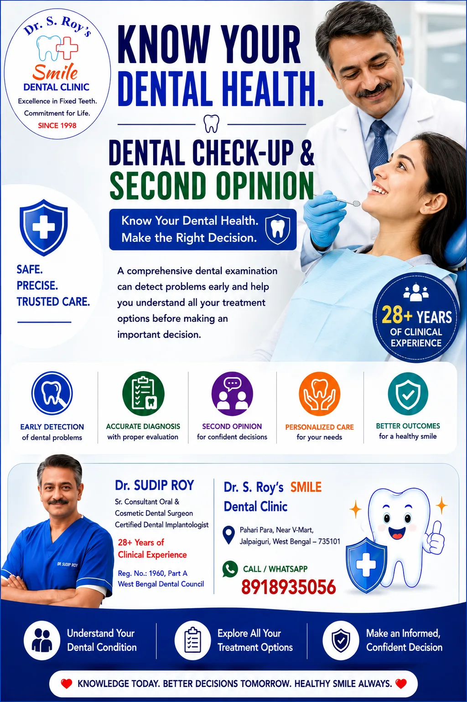

Dental Expert 2nd Opinion in Jalpaiguri | Get the Right Advice. Make the Right Choice.
Before committing to an expensive dental treatment, surgery, or tooth extraction recommended elsewhere, get an honest, independent second opinion from Dr. Sudip Roy — a dental surgeon with 28+ years of clinical experience at Dr. S. Roy's SMILE Dental Clinic, Pahari Para, Jalpaiguri.

What Is a Dental Second Opinion?
A dental second opinion is an independent evaluation of a diagnosis or treatment plan, given by a dentist who was not involved in the original recommendation. Its purpose is simple: to confirm, question, or reassess a proposed treatment before you commit to it — particularly when the treatment is expensive, extensive, or irreversible, such as an extraction, root canal, or dental implant.
Seeking a second opinion does not mean distrust of your original dentist. It's a normal, responsible step in making an informed decision about your own health, and most dental professionals understand and respect a patient's choice to seek one.
When Should You Get a Second Opinion?
- Before a tooth extraction, especially if you're unsure whether the tooth could still be saved
- Before major or expensive treatment, such as implants, crowns, or full-mouth work
- When the diagnosis or treatment plan feels unclear or wasn't fully explained
- When you want to compare treatment approaches, materials, or cost estimates
- Simply for peace of mind before any significant procedure
What to Bring to Your Second Opinion Consultation
- Any existing X-rays or scans
- Written treatment plan or notes from your original consultation
- A clear idea of your main concern or question — cost, necessity, alternatives, or timing
Bringing your existing records helps Dr. Roy give a complete, accurate review without needing to repeat diagnostic steps unnecessarily.
Why Get a Second Opinion at Dr. S. Roy's SMILE Dental Clinic?
- 28+ years of clinical experience across general, cosmetic, and implant dentistry
- Honest, unbiased guidance — not built around upselling additional treatment
- A second opinion can sometimes reveal that a tooth recommended for extraction is actually treatable with a root canal or other restorative option
- Available in-person at the clinic, or via online video consultation for patients unable to visit in person
Frequently Asked Questions
Is it normal to get a second opinion from a dentist?
Yes. Seeking a second opinion before major dental work is a normal and responsible part of making an informed healthcare decision. Most dental professionals understand and respect this.
How much does a dental second opinion cost in Jalpaiguri?
A second opinion consultation follows the standard consultation fee of ₹500. Bring your existing X-rays and reports to make the most of the visit.
What should I bring to a dental second opinion appointment?
Bring any X-rays, scans, treatment plans, and notes from your original consultation, so the review can be complete and accurate.
When should I get a second opinion before dental treatment?
Before any expensive, extensive, or irreversible treatment — such as tooth extraction, root canal, or dental implants — especially if you feel uncertain about the diagnosis or cost.
Can a second opinion save a tooth that was recommended for extraction?
Sometimes, yes. A tooth that appears severely damaged in one assessment may still be treatable with a root canal or other restorative option. A second opinion helps confirm whether extraction is truly the only option.